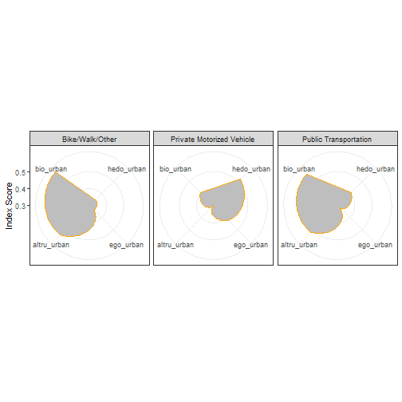

#R Tutorial for Commuting Information with IPUMS USA
##Tutorial 1: Demographic Summary Statistic Tables
The first step is loading all the required packages. Some may need to be installed - use the code: install.package(name_of_package)
#loading all the necessary libraries
library(ipumsr)
library(truncnorm)
library(reshape2)
library(ggplot2)
library(tidyverse)
library(qwraps2)
library(knitr)
library(kableExtra)
Next, you will need to retrive the data file from the IPUMS USA website.
Vist https://usa.ipums.org/usa/index.shtml
Click on "Get Data" under "Create Your Custom Data Set"
Next, create a custom data set from the given variables. The IPUMS dataset contains a substantive number of observations and variables. For the purposes of this tutorial, the only necessary variables to include are:
Additional variables can be included as needed.

Once your custom data set has been created it must be processed. Depending on the size of the requested file this could take upwards of 30 minutes. Once the data is available for download, the green box with "Download.DAT" will appear under the "Data" column. Download both the R data file as well as the DDI Codebook and save in the local Working Directory.

Now we can load the data files into RStudio.
ddi <- read_ipums_ddi("usa_00003.xml")
df4 <- read_ipums_micro(ddi)
## Use of data from IPUMS-USA is subject to conditions including that users should
## cite the data appropriately. Use command `ipums_conditions()` for more details.
seadf <- data.frame(df4$AGE, df4$HHINCOME, df4$RENTGRS, df4$TRANWORK, df4$TRANTIME, df4$SEX, df4$METRO, stringsAsFactors = FALSE)
#Changing the names of the variables so they are easier to work with
names(seadf) <- c("AGE", "INCOME", "RENT", "TRANWORK", "COMMUTE_TIME", "SEX", "METRO")
Many of the variables in the IPUMS data contain missing values or numeric codes for non-responses that will impact analysis. These need to be removed or changed prior to creating summary statistics.
#Changing INCOME to replace 9999999 values as NA
seadf <- seadf %>%
mutate(INCOME = replace(INCOME, INCOME == 9999999, NA))
#Removing 0 values from rent variable
seadf <- seadf %>%
mutate(RENT = replace(RENT, RENT == 0, NA))
#Recoding variable for METRO to correspond with matrix
#See IPUMS definition for METRO at https://usa.ipums.org/usa-action/variables/METRO#description_section
seadf$METRO1 <- NA
seadf$METRO1[seadf$METRO==2] <- "Urban"
seadf$METRO1[seadf$METRO==0 & seadf$METRO==1] <- "Non-Urban"
seadf$METRO1[seadf$METRO==3 & seadf$METRO==4] <- "Mixed"
#Recoding TRANWORK variable to correspond with matrix
#See IPUMS definition for TRANWORK at #https://usa.ipums.org/usa-action/variables/TRANWORK#description_section
seadf$COMMUTE_TYPE <-NA
seadf$COMMUTE_TYPE[seadf$TRANWORK>=10 & seadf$TRANWORK<=20] <- "Private Motorized Vehicle"
seadf$COMMUTE_TYPE[seadf$TRANWORK>=30 & seadf$TRANWORK<=36] <- "Public Transit"
seadf$COMMUTE_TYPE[seadf$TRANWORK>=40 & seadf$TRANWORK<=50] <- "Bike/Walk/Other"
#Dropping all observations that did not commute
seadf <- drop_na(seadf, COMMUTE_TYPE)
Once the data has beeen prepared for analysis, the next step is to create a table of summary statistics for each cell in the matrix. The first table in this example includes information for the entire Seattle data set. Each subsequent table creates a subsetted dataframe based on METRO and provides summary statistics for the row in the matrix.
###Table for all observations
#Creating a table of summary statistics for all the data
options(qwraps2_markup = "markdown")
#Creating a table of summary statistics
sumtable1 <-
list("Age" =
list('Age: mean (sd)'=~qwraps2::mean_sd(AGE, denote_sd='paren')),
"Income" =
list('Income: mean'=~mean(INCOME, na.rm=TRUE)),
"Sex" =
list('# Female (%)' = ~ qwraps2::n_perc0(SEX==2),
'# Male (%)' = ~ qwraps2::n_perc0(SEX==1)),
'Commute Time' =
list('Average (sd)'=~qwraps2::mean_sd(COMMUTE_TIME, denote_sd='paren'),
'Median and IQR)'=~qwraps2::median_iqr(COMMUTE_TIME)))
#Putting the summary statistics into a dataframe
test <- summary_table(dplyr::group_by(seadf, COMMUTE_TYPE), sumtable1)
#Naming the columns
colnames(test) <- c("Bike/Walk/Other", "Private Motorized Vehicle", "Public Transit")
#Putting the datafram into table format to plot
test %>%
kable() %>%
kable_styling(bootstrap_options = c("striped", "hover"), font_size = 13) %>%
pack_rows("Sex", 3, 4) %>%
pack_rows("Commute Time", 5, 6)
| Bike/Walk/Other | Private Motorized Vehicle | Public Transit | |
|---|---|---|---|
| Age: mean (sd) | 38.04 (15.42) | 42.83 (13.63) | 39.90 (13.68) |
| Income: mean | 83384.66 | 98561.00 | 97876.46 |
| Sex | |||
| # Female (%) | 7,696 (42) | 174,289 (47) | 11,598 (50) |
| # Male (%) | 10,670 (58) | 199,607 (53) | 11,810 (50) |
| Commute Time | |||
| Average (sd) | 14.18 (15.62) | 25.23 (20.90) | 48.18 (29.77) |
| Median and IQR) | 10.00 (5.00, 20.00) | 20.00 (10.00, 30.00) | 45.00 (30.00, 60.00) |
###Table for all urban commuters
#Summary statistics for urban commuters
urbandata <- subset(seadf, METRO==2)
sumtable2 <-
list("Age" =
list('Age: mean (sd)'=~qwraps2::mean_sd(AGE, denote_sd='paren')),
"Income" =
list('Income: mean'=~mean(INCOME, na.rm=TRUE)),
"Sex" =
list('# Female (%)' = ~ qwraps2::n_perc0(SEX==2),
'# Male (%)' = ~ qwraps2::n_perc0(SEX==1)),
'Commute Time' =
list('Average (sd)'=~qwraps2::mean_sd(COMMUTE_TIME, denote_sd='paren'),
'Median and IQR)'=~qwraps2::median_iqr(COMMUTE_TIME)))
urban_table <- summary_table(dplyr::group_by(urbandata, COMMUTE_TYPE), sumtable2)
colnames(urban_table) <- c("Bike/Walk/Other", "Private Motorized Vehicle", "Public Transit")
urban_table %>%
kable() %>%
kable_styling(bootstrap_options = c("striped", "hover"), font_size = 13) %>%
pack_rows("Sex", 3, 4) %>%
pack_rows("Commute Time", 5, 6)
| Bike/Walk/Other | Private Motorized Vehicle | Public Transit | |
|---|---|---|---|
| Age: mean (sd) | 36.52 (13.72) | 41.59 (13.37) | 37.53 (13.25) |
| Income: mean | 100111.46 | 110044.59 | 95923.83 |
| Sex | |||
| # Female (%) | 2,206 (43) | 18,887 (48) | 4,089 (52) |
| # Male (%) | 2,948 (57) | 20,351 (52) | 3,796 (48) |
| Commute Time | |||
| Average (sd) | 18.48 (14.91) | 22.70 (16.40) | 37.42 (21.55) |
| Median and IQR) | 15.00 (10.00, 25.00) | 20.00 (13.00, 30.00) | 30.00 (25.00, 45.00) |
###Table for all non-urban commuters
#Summary statistics for non-urban commuters
non_urbandata <- subset(seadf, METRO==0 | METRO ==1)
sumtable3 <-
list("Age" =
list('Age: mean (sd)'=~qwraps2::mean_sd(AGE, denote_sd='paren')),
"Income" =
list('Income: mean'=~mean(INCOME, na.rm=TRUE)),
"Sex" =
list('# Female (%)' = ~ qwraps2::n_perc0(SEX==2),
'# Male (%)' = ~ qwraps2::n_perc0(SEX==1)),
'Commute Time' =
list('Average (sd)'=~qwraps2::mean_sd(COMMUTE_TIME, denote_sd='paren'),
'Median and IQR)'=~qwraps2::median_iqr(COMMUTE_TIME)))
non_urban_table <- summary_table(dplyr::group_by(non_urbandata, COMMUTE_TYPE), sumtable2)
colnames(non_urban_table) <- c("Bike/Walk/Other", "Private Motorized Vehicle", "Public Transit")
non_urban_table %>%
kable() %>%
kable_styling(bootstrap_options = c("striped", "hover"), font_size = 13) %>%
pack_rows("Sex", 3, 4) %>%
pack_rows("Commute Time", 5, 6)
| Bike/Walk/Other | Private Motorized Vehicle | Public Transit | |
|---|---|---|---|
| Age: mean (sd) | 39.89 (16.65) | 44.52 (14.20) | 41.94 (15.55) |
| Income: mean | 66270.11 | 80883.82 | 77006.16 |
| Sex | |||
| # Female (%) | 1,820 (43) | 30,233 (47) | 398 (45) |
| # Male (%) | 2,394 (57) | 33,676 (53) | 490 (55) |
| Commute Time | |||
| Average (sd) | 9.25 (11.25) | 23.18 (24.21) | 47.83 (38.08) |
| Median and IQR) | 5.00 (3.00, 10.00) | 15.00 (10.00, 30.00) | 37.50 (20.00, 60.00) |
###Table for all mixed-use/suburban commuters
#Summary statistics for mixed commuters
mixeddata <- subset(seadf, METRO==3)
sumtable4 <-
list("Age" =
list('Age: mean (sd)'=~qwraps2::mean_sd(AGE, denote_sd='paren')),
"Income" =
list('Income: mean'=~mean(INCOME, na.rm=TRUE)),
"Sex" =
list('# Female (%)' = ~ qwraps2::n_perc0(SEX==2),
'# Male (%)' = ~ qwraps2::n_perc0(SEX==1)),
'Commute Time' =
list('Average (sd)'=~qwraps2::mean_sd(COMMUTE_TIME, denote_sd='paren'),
'Median and IQR)'=~qwraps2::median_iqr(COMMUTE_TIME)))
mixed_table <- summary_table(dplyr::group_by(mixeddata, COMMUTE_TYPE), sumtable2)
colnames(mixed_table) <- c("Bike/Walk/Other", "Private Motorized Vehicle", "Public Transit")
mixed_table %>%
kable() %>%
kable_styling(bootstrap_options = c("striped", "hover"), font_size = 13) %>%
pack_rows("Sex", 3, 4) %>%
pack_rows("Commute Time", 5, 6)
| Bike/Walk/Other | Private Motorized Vehicle | Public Transit | |
|---|---|---|---|
| Age: mean (sd) | 38.93 (16.04) | 42.75 (13.25) | 42.14 (13.24) |
| Income: mean | 85121.94 | 103941.43 | 102825.67 |
| Sex | |||
| # Female (%) | 950 (41) | 44,483 (46) | 2,713 (50) |
| # Male (%) | 1,343 (59) | 52,477 (54) | 2,699 (50) |
| Commute Time | |||
| Average (sd) | 13.96 (17.99) | 27.95 (20.67) | 56.03 (29.52) |
| Median and IQR) | 8.00 (3.00, 15.00) | 25.00 (15.00, 35.00) | 50.00 (40.00, 65.00) |
##Tutorial 2: Creating Radar Plots of Values
The next stage is to incorporate a variable for values that has been obtained from the community engagement tool in this toolkit. Once the values have been coded as indexes, we can add them to a new dataframe to use for plotting.
NOTE: the values used below are not based on observed data. For the purposes of this tutorial, we have inserted random values into the index scores to make plotting possible.
#creating a new dataframe with set meanavlues for radar plots
#Note: while the order of the index values does not affect the analysis, make sure that each index is entered in the same order for each new object. Here, the first index is for "Bike/Walk/Other", the second for "Private Motorized Vehicle", and the third for "Public Transit"
hedo_urban <- c(0.52, 0.41, .35)
ego_urban <- c(0.42, 0.32, 0.34)
altru_urban <- c(0.3, 0.52, 0.54)
bio_urban <- c(0.41, 0.56, 0.58)
#Subset by group
group <- c("Private Motorized Vehicle", "Public Transportation", "Bike/Walk/Other")
#Add the objects to a dataframe for plotting
radar_urban_test <- data.frame(group, hedo_urban, ego_urban, altru_urban, bio_urban)
#Setting up the data for ggplot
urban_toplot=melt(radar_urban_test, id.vars = 'group')
#Creating the radar plot
base = ggplot(urban_toplot, aes(x = variable, y = value, group = group))
plot1 = base + geom_polygon(fill = 'gray',col='orange') + coord_polar()
plot2 = plot1 + facet_wrap(~group,
ncol = 3)
plot2 + theme_bw() + labs(y='Index Score',
x=NULL)

We can now interpret the results. Each index is plotted into a different corner of the cell. Shaded areas approaching the outside of the cell represent higher values in that category. For example, here we see that people in the "Bike/Walk/Other" category have higher values for bioshperic and altruistic values (NOTE: These values do not reflect actual data). As a result, communications toward these groups should appeal to these sets of values.
Repeat the above steps for non-urban and mised-use/suburb commuters to complete the full 9x9 matrix.